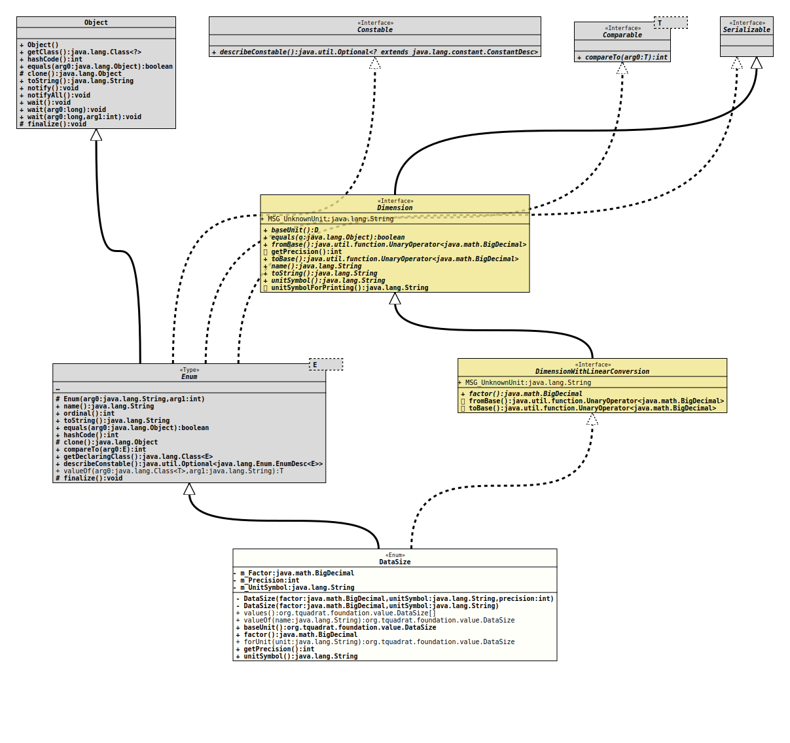

- All Implemented Interfaces:
Serializable,Comparable<DataSize>,Constable,Dimension
@ClassVersion(sourceVersion="$Id: DataSize.java 820 2020-12-29 20:34:22Z tquadrat $")
@API(status=STABLE,
since="0.1.0")
public enum DataSize
extends Enum<DataSize>
implements Dimension
The various instances of data sizes (for files or free disk space or
capacities of memory sticks …).
- Author:
- Thomas Thrien (thomas.thrien@tquadrat.org)
- Version:
- $Id: DataSize.java 820 2020-12-29 20:34:22Z tquadrat $
- Since:
- 0.1.0
- UML Diagram
-

UML Diagram for "org.tquadrat.foundation.value.DataSize"
{kind=link}
-
Nested Class Summary
Nested classes/interfaces inherited from class java.lang.Enum
Enum.EnumDesc<E extends Enum<E>> -
Enum Constant Summary
Enum ConstantsEnum ConstantDescriptionA single byte.A gigabyte in the binary form.A gigabyte (the decimal form).A Kilobyte with 1024 bytes.A Kilobyte (with 1000 bytes).A megabyte in the binary form.A megabyte (the decimal form).A terabyte in the binary form.A terabyte (the decimal form). -
Field Summary
FieldsModifier and TypeFieldDescriptionprivate final BigDecimalThe factor.private final intThe default precision.private final StringThe unit string.Fields inherited from interface org.tquadrat.foundation.value.api.Dimension
MSG_UnknownUnit -
Constructor Summary
ConstructorsModifierConstructorDescriptionprivateDataSize(BigDecimal factor, String unitSymbol) Creates a newDataSizeinstance, with a default precision of zero mantissa digits.privateDataSize(BigDecimal factor, String unitSymbol, int precision) Creates a newDataSizeinstance. -
Method Summary
Modifier and TypeMethodDescriptionfinal DataSizebaseUnit()Returns the base unit.
E.g. for length, the base unit would be Meter (m), for mass, it is Kilogram (kg), and so on.final BigDecimalfactor()Returns the factor that is used to convert a value from this unit to the base unit.
For length, if you have to convert a Centimeter value to Meter, you will divide that by 100 or multiply it with a factor of 0.01.
For the base unit, the factor is 1.0.static final DataSizeReturns theDataSizeinstance for the given unit.final intReturns the default precision for this unit that is used when the respective value is converted to a String.final StringReturns the unit symbol for the dimension as a single line string.
For a length, this would be "m", for a speed "km/h", and for an acceleration, it could be "m/(s^2)".static DataSizeReturns the enum constant of this class with the specified name.static DataSize[]values()Returns an array containing the constants of this enum class, in the order they are declared.
-
Enum Constant Details
-
BYTE
A single byte. -
KILOBYTE
A Kilobyte (with 1000 bytes). -
KIBIBYTE
A Kilobyte with 1024 bytes. -
MEGABYTE
A megabyte (the decimal form). -
MEBIBYTE
A megabyte in the binary form. -
GIGABYTE
A gigabyte (the decimal form). -
GIBIBYTE
A gigabyte in the binary form. -
TERABYTE
A terabyte (the decimal form). -
TEBIBYTE
A terabyte in the binary form.
-
-
Field Details
-
m_Factor
The factor. -
m_Precision
The default precision. -
m_UnitSymbol
The unit string.
-
-
Constructor Details
-
DataSize
Creates a newDataSizeinstance.- Parameters:
factor- The factor.unitSymbol- The unit string.precision- The default precision.
-
DataSize
Creates a newDataSizeinstance, with a default precision of zero mantissa digits.- Parameters:
factor- The factor.unitSymbol- The unit string.
-
-
Method Details
-
values
Returns an array containing the constants of this enum class, in the order they are declared.- Returns:
- an array containing the constants of this enum class, in the order they are declared
-
valueOf
Returns the enum constant of this class with the specified name. The string must match exactly an identifier used to declare an enum constant in this class. (Extraneous whitespace characters are not permitted.)- Parameters:
name- the name of the enum constant to be returned.- Returns:
- the enum constant with the specified name
- Throws:
IllegalArgumentException- if this enum class has no constant with the specified nameNullPointerException- if the argument is null
-
baseUnit
Returns the base unit.
E.g. for length, the base unit would be Meter (m), for mass, it is Kilogram (kg), and so on. -
factor
Returns the factor that is used to convert a value from this unit to the base unit.
For length, if you have to convert a Centimeter value to Meter, you will divide that by 100 or multiply it with a factor of 0.01.
For the base unit, the factor is 1.0. -
forUnit
Returns theDataSizeinstance for the given unit.- Parameters:
unit- The unit.- Returns:
- The respective instance.
- Throws:
IllegalArgumentException- The given unit is unknown.
-
getPrecision
Returns the default precision for this unit that is used when the respective value is converted to a String.- Specified by:
getPrecisionin interfaceDimension- Returns:
- The mantissa length for a value with this unit.
-
unitSymbol
Returns the unit symbol for the dimension as a single line string.
For a length, this would be "m", for a speed "km/h", and for an acceleration, it could be "m/(s^2)".- Specified by:
unitSymbolin interfaceDimension- Returns:
- The unit.
-